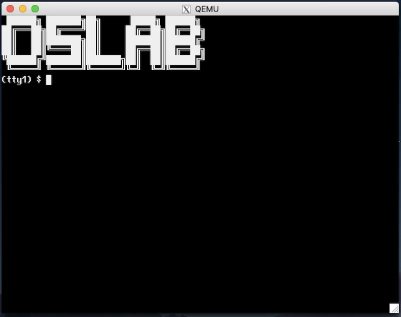

在命令行中 git pull origin L2 下载框架代码。MODULE 为 L2
本次实验的报告直接在 kernel/ 目录下原先的实验报告基础上添加。除非特殊情况，本次实验的实验报告不建议超过 2 页 A4 纸。请在实验报告中描述你在实验中遇到的特别值得一提的事件，例如你代码的架构设计、特别精巧的实现、遇到印象深刻的 bug 等。
请输入 Token 登录。
真正的 “操作系统内核” 开始于课堂上的示例代码 “线程操作系统”：
线程操作系统实现了共享内存的状态机 (线程) 之间的主动和被动切换：在线程执行时中断到来，操作系统代码开始执行并保存处理器运行的寄存器现场；在中断返回时，可以选择任何一个进程/线程已经保存的寄存器现场恢复。在这个实验中，我们扩展 thread-os，实现多处理器操作系统内核中的内核线程 API (就像 pthreads 库，或是课堂上展示的 thread.h)。在完成这个实验后，你就得到了一个可以分时抢占式运行多任务的 “嵌入式操作系统”。
本次实验在 pmm 的基础上，增加中断和线程管理的功能。和 thread-os 类似，操作系统代码会设置接管中断/系统调用/异常时的回调函数，并且实现线程的生命周期函数以及同步机制。
本次实验 pmm 模块的接口保持不变 (沿用你上一次的实现即可)。但因为处理器上的线程随时可能被中断，你需要在 Lab1 线程安全的基础上实现中断安全——这可以通过使用类似 xv6 spinlock 的方式实现。
本次实验在 os 模块中新增了 trap 和 on_irq 两个函数，分别是系统中唯一中断/系统调用的入口和中断处理程序的回调注册。
本次实验的主要任务是实现 kmt 模块中的函数，你需要完成 struct task, struct spinlock, struct semaphore 的定义，并实现 kmt 的全部 API。
typedef Context *(*handler_t)(Event, Context *);
MODULE(os) {
void (*init)();
void (*run)();
Context *(*trap)(Event ev, Context *context);
void (*on_irq)(int seq, int event, handler_t handler);
};
MODULE(pmm) {
void (*init)();
void *(*alloc)(size_t size);
void (*free)(void *ptr);
};
typedef struct task task_t;
typedef struct spinlock spinlock_t;
typedef struct semaphore sem_t;
MODULE(kmt) {
void (*init)();
int (*create)(task_t *task, const char *name, void (*entry)(void *arg), void *arg);
void (*teardown)(task_t *task);
void (*spin_init)(spinlock_t *lk, const char *name);
void (*spin_lock)(spinlock_t *lk);
void (*spin_unlock)(spinlock_t *lk);
void (*sem_init)(sem_t *sem, const char *name, int value);
void (*sem_wait)(sem_t *sem);
void (*sem_signal)(sem_t *sem);
};
框架代码的 main 函数发生了一些修改：
int main() {
ioe_init();
cte_init(os->trap);
os->init();
mpe_init(os->run);
return 1;
}
在上一个实验中，框架代码在 os->init() 后直接 mpe->init() 启动多个线程运行内存分配/回收。框架代码中的 ioe_init 和 cte_init 是本次实验新加入的，调用它们并不会立即生效——此时处理器的中断处于关闭状态，除非执行非法操作，否则 os->trap 不会被调用。
虽然你不能修改框架代码 (或者说你可以修改，但提交到 Online Judge 后，会被替换)，但你可以控制 os->init() 的行为，例如，你可能需要在其中执行模块的初始化 (框架代码不会调用模块的初始化)：
但你可能会在其中增加 kmt 模块的初始化：
static void os_init() {
pmm->init();
kmt->init();
}
在 os->init() 初始化完成后，mpe_init 会让每个处理器都运行相同的 os->run() 代码。此时，操作系统就真正化身成为了中断处理程序：
中断、系统调用、异常都会调用 os->trap(ev, context)。中断/异常发生后，AbstractMachine 会将寄存器保存到栈上，我们推荐你对 context 做一个拷贝 (这样容易保证正确性)，并用 thread-os 类似的方式实现上下文切换。每个处理器都各自管理中断，os->trap() 也会在多处理之间并行执行，因此你需要用自旋锁保护好其中的共享变量 (小心死锁，并保持中断关闭)。
中断处理程序几乎就是 “整个操作系统”。为了增加代码的可维护性，防止在增加新的功能时都直接去修改 os->trap 的代码，我们提供了中断处理 API：
os->on_irq(seq, event, handler)
调用 os->on_irq 向操作系统内核 “注册” 一个中断处理程序：在 os->trap(ev, ctx) 执行时，当 ev.event (事件编号) 和 event 匹配时，调用 handler(event, ctx);。更多的细节：
seq 决定了 handler 被调用的顺序，seq 小的 handler 先被调用。seq 相同的按任意顺序调用；event == EVENT_NULL 时，在任何中断/异常时都调用 handler；Context，在中断返回时恢复到这个 conetxt。当多个 handler 都返回 context 时，是 undefined behavior。os->on_irq 的设计类似于 “面向切面编程” (Aspected-Oriented Programming, AOP) 的设计。我们的 os 模块并不需要知道系统中有多少中断、多少设备驱动程序可能会处理中断，而是让每个需要响应中断的组件：设备驱动、系统调用，甚至是调度器自行注册中断处理程序。
例如，如果我们希望在 I/O 设备发生中断时，向键盘驱动的信号量执行一个 V 操作，我们只需要：
static Context *input_notify(Event ev, Context *context) {
kmt->sem_signal(&sem_kbdirq); // 在 IO 设备中断到来时，执行 V 操作唤醒一个线程
return NULL;
}
void input_init() {
// seq == 100 是随意设置的，我们并不在意何时调用
os->on_irq(100, EVENT_IRQ_IODEV, input_notify);
...
}
甚至在 jyy 的参考实现中，寄存器现场保存、执行调度程序的代码，也都是用 on_irq 注册的 (尽管你并不必要这么做，可以把这部分代码直接写在 os->trap 中)：
// thread.c，线程管理
static void kmt_init() {
...
os->on_irq(INT_MIN, EVENT_NULL, kmt_context_save); // 总是最先调用
os->on_irq(INT_MAX, EVENT_NULL, kmt_schedule); // 总是最后调用
...
}
如果上述代码被执行，那么按照注册时的 sequence number 进行调用：
kmt_context_save (INT_MIN) 和 kmt_schedule (INT_MAX)；kmt_context_save (INT_MIN), input_notify (100), 和 kmt_schedule (INT_MAX)而 os->trap() 的实现依然保持简单：
static Context *os_trap(Event ev, Context *ctx) {
Context *next = NULL;
for (auto &h: handlers_sorted_by_seq) {
if (h.event == EVENT_NULL || h.event == ev.event) {
Context *r = h.handler(ev, ctx);
panic_on(r && next, "return to multiple contexts");
if (r) next = r;
}
}
panic_on(!next, "return to NULL context");
panic_on(sane_context(next), "return to invalid context");
return next;
}
pmm 与之前行为一致，但因为它被调用的场景增加了 (并不是每个 CPU 只是连续不断地执行代码，而是 CPU 可能被中断)，我们需要稍稍对它进行改进：
允许任意线程调用 pmm->alloc 和 pmm->free。此外，允许在中断处理程序中分配和回收内存。因此简单起见，不允许 pmm->alloc() 和 pmm->free() 被中断。
小心：如果你在 kmt->init() 的时候调用 pmm->alloc()，此时自旋锁可能还没有完成必要的初始化。
kmt->init() 负责初始化必要的数据，例如分配一些重要的数据结构。我们预期你会在 os->init() 时调用 kmt->init()。整个系统启动只调用一次 kmt->init()。
int (*create)(task_t *task, const char *name, void (*entry)(void *arg), void *arg);
void (*teardown)(task_t *task);
其中 create 在系统中创建一个线程 (task_t 应当事先被分配好)，这个线程立即就可以被调度执行 (但调用 create 时中断可能处于关闭状态，在打开中断后它才获得被调度执行的权利)。我们假设 create 创建的线程永不返回——但它有可能在永远不会被调度执行的情况下被调用 kmt->teardown 回收。
teardown 相应回收为线程分配的资源——例如你可能会为 task_t 动态分配内存：
int kmt_create(task_t *task, const char *name, void (*entry)(void *arg), void *arg) {
...
task->stack = pmm->alloc(STACK_SIZE); // 动态分配内核栈
...
}
这部分的内存需要在 teardown() 时被回收。线程只有在永远不会被调度到处理器上执行的前提下才能被回收。你可以假设回收的时候线程不再持有任何自旋锁或在信号量上等待。
允许任意线程调用 create/teardown。不会在中断处理程序中调用 create/teardown。
void (*spin_init)(spinlock_t *lk, const char *name);
void (*spin_lock)(spinlock_t *lk);
void (*spin_unlock)(spinlock_t *lk);
lock-unlock 实现保护一段强原子性 (任何其他线程、中断处理程序、其他处理器都不能同时得到同一把锁)：
spin_lock 将会关闭处理器的中断，因此对一个处理器而言，持有任何一个自旋锁之后就不会再发生线程切换；spin_unlock 在解除最后一个当前处理器持有的自旋锁之后，需要将处理器的中断状态恢复。例如在中断处理程序中，中断是关闭的，因此 spin_unlock 不应该打开中断；但在一般的线程中，spin_unlock 后应当恢复处理器的中断。允许任意线程调用 spin_init, spin_lock 和 spin_unlock。中断处理程序允许调用 spin_lock 和 spin_unlock。
void (*sem_init)(sem_t *sem, const char *name, int value);
void (*sem_wait)(sem_t *sem);
void (*sem_signal)(sem_t *sem);
在信号量初始化时，value 指定了它初始的数值。初始时 value == 1 可以把信号量当互斥锁；初始时 value == 0 可以把信号量作为生产者-消费者缓冲区管理实现。sem_wait 和 sem_signal 分别对应了 P/V 操作。
sem_wait 操作。在 P 操作执行没有相应资源时，线程将被阻塞 (不再被调度执行)。中断没有对应的线程、不能阻塞，因此不能在中断时调用 sem_wait；sem_signal，包括任何处理器中的任何线程和任何处理器的任何中断。在信号量实现时，大约需要做以下几件事 (任何一本操作系统教材上都会提到类似的实现)：
void sem_wait(sem_t *sem) {
spin_lock(&sem->lock); // 获得自旋锁
sem->count--; // 自旋锁保证原子性
if (...) {
// 没有资源，需要等待
...
mark_as_not_runnable(current); // 当前线程不能再执行
}
spin_unlock(&sem->unlock);
if (...) { // 如果 P 失败，不能继续执行
// (注意此时可能有线程执行 V 操作)
yield(); // 引发一次上下文切换
}
}
允许任意线程调用 sem_init, sem_wait 和 sem_signal。中断处理程序不可睡眠，但可以在中断处理程序中调用 sem_signal。
native 处于长久没有维护的阶段，因此为了实验的稳定性，我们总是以 qemu (x86-64 和 i386) 为准。Online Judge 评测时只有 x86-qemu 和 x86_64-qemu。
我们测试代码的时候，会替换我们的 framework 目录 (os.h 除外)，因此你对其中文件 (例如 kernel.h) 的任何修改都会被消除。注意到我们的测试代码需要数据结构 (sem_t 等) 的定义，而这些定义并不在 kernel.h 中，因此你需要在 os.h 中包含它们，否则测试代码将无法编译。测试代码框架如下：
#include 操作系统随时可能被中断——如果你在中断处理程序中打印了日志，可能会和其他日志混合在一起，从而影响 Online Judge 的正确性判断。我们建议你使用自己的 log 或 printk 函数 (而不是 printf; 我们的测试程序会使用 printf)，且它们的行为由预编译指令控制，仅在你本地编译时才打印数据。
当然这也不是绝对的。例如，系统启动时 (mpe_init 之前) 打印少量日志，不会引起问题。
在任意时刻，操作系统中都可能有多个线程，你需要设计调度的策略在多个处理器中调度这些线程，使系统中能够被执行的线程尽可能不发生饥饿。
在线程数不过多的前提 (十几) 下，我们要求每个可运行的线程，给定足够长 (例如数秒) 的时间，能够被调度到每个处理器上执行。这个需求看起来很简单：稍微改一改 thread-os.c 的调度器就行了。但你要警惕了！这可能比你想象的困难得多。
经过 Lab1 的洗礼，你们应该意识到，写出正确的程序要从简单、有效的策略开始，盲目使用复杂的策略只会让你陷入 Wrong Answer 的泥潭。
官方测试用例使你的 “操作系统” 看起来更像是个操作系统。但它并不能作为 “压力测试” 来帮助你检查 kmt 实现的正确性。我们为大家提供了 dev 模块及其实现 (已经包含在框架代码中)：
typedef struct device device_t;
MODULE(dev) {
void (*init)();
device_t *(*lookup)(const char *name);
};
我们的官方测试用例还包含了以下设备的驱动。回顾 everything is a file，在 Linux 中，设备不过是一个实现了 struct file_operations 的对象。我们的 “操作系统” 中包含以下设备：
input，支持读取键盘的输入；fb，支持一个软件模拟的 2D 显示加速器的写入 (我们打算未来把这个显示加速器用真正的硬件实现)；tty1, tty2, 两个支持读写的虚拟终端，使用 Alt-1, Alt-2 在虚拟中断之间切换；sda, 支持读写的物理磁盘。你可以从中读出操作系统内核的 ELF 文件。在这个实验中，你并不需要调试正确所有的设备驱动程序 (但调试不通过一般意味着 Online Judge 会测试失败)。
代码合并后，你需要在 os->init() 中手工添加设备模块的初始化 dev->init()。如果实现正确，就能完成中断处理程序 (和若干设备相关线程) 的初始化。你不需要添加额外的代码，就能看到闪烁的光标，并且能看到输入字符的回显。此后，你就可以创建若干访问设备的线程，例如你可以为每个 tty 设备创建一个线程：
static void tty_reader(void *arg) {
device_t *tty = dev->lookup(arg);
char cmd[128], resp[128], ps[16];
snprintf(ps, 16, "(%s) $ ", arg);
while (1) {
tty->ops->write(tty, 0, ps, strlen(ps));
int nread = tty->ops->read(tty, 0, cmd, sizeof(cmd) - 1);
cmd[nread] = '\0';
sprintf(resp, "tty reader task: got %d character(s).\n", strlen(cmd));
tty->ops->write(tty, 0, resp, strlen(resp));
}
}
static void os_init() {
...
kmt->create(task_alloc(), "tty_reader", tty_reader, "tty1");
kmt->create(task_alloc(), "tty_reader", tty_reader, "tty2");
}

与 L1 类似，我们的测试代码会使用 Online Judge 的 framework 代码 (包含一些测试用例、额外的运行时检查等)。框架代码会调用你的 os->init() 和 os->run()，就像下面的代码那样：
static void producer(void *arg) { ... }
static void consumer(void *arg) { ... }
static void create_threads() {
...
kmt->create(pmm->alloc(sizeof(task_t)),
"test-thread-1", producer, xxx);
kmt->create(pmm->alloc(sizeof(task_t)),
"test-thread-2", consumer, yyy);
...
}
int main() {
ioe_init();
cte_init(os->trap);
os->init();
create_threads();
mpe_init(os->run); // all cores call os->run()
return 1;
}
我们的 producer/consumer 可能就像上课的例子那样，管理 empty 和 fill 两个信号量，分别打印左括号和右括号，然后我们会检查输出是否满足 (1) 是合法括号序列的一个前缀; (2) 括号嵌套的深度是否超过要求。与 Lab1 一样，我们在测试时会链接一个我们实现正确的 klib，所以大家即便 klib 有 bug，也不必太过担心。
我们推荐大家阅读的两份代码，首先是 thread-os，它提供了 “操作系统” 的大框架：
此外就是 xv6，它包含了更多的实现细节，例如管道、文件……
现在，我们的操作系统还不支持进程、文件系统等，但的确有了完善的物理内存管理和线程管理 API。换句话说，我们实现的是一个支持线程的 “嵌入式操作系统”，它能运行在没有 MMU 的硬件上。
为这样的一个操作系统编写 “应用程序”，就是直接在操作系统代码中静态链接一些函数，这些函数可以作为线程的入口，并且函数可以任意访问内核数据、直接以函数调用的形式调用操作系统内的 API。为了更好地理解实验要求，我们不妨给出一个课堂上 “生产者-消费者” 在我们操作系统上运行的例子。
首先，我们定义信号量 (kmt 实验需求部分)，并且用宏包装一下 P/V 操作 (这一步完全不必要也不是 best practice，只是为了让我们的代码看起来和课堂上讲解得一样)：
sem_t empty, fill;
#define P kmt->sem_wait
#define V kmt->sem_signal
接下来，我们写出个生产者/消费者线程的代码，就跟我们课堂上展示的 threads.h 完全一样：
void T_produce(void *arg) { while (1) { P(&empty); putch('('); V(&fill); } }
void T_consume(void *arg) { while (1) { P(&fill); putch(')'); V(&empty); } }
然后，我们在操作系统初始化 (os->init) 中创建若干个生产者/消费者线程，其中利用了物理内存的分配：
static inline task_t *task_alloc() {
return pmm->alloc(sizeof(task_t));
}
static void run_test1() {
kmt->sem_init(&empty, "empty", N);
kmt->sem_init(&fill, "fill", 0);
for (int i = 0; i < NPROD; i++) {
kmt->create(task_alloc(), "producer", T_produce, NULL);
}
for (int i = 0; i < NCONS; i++) {
kmt->create(task_alloc(), "consumer", T_consume, NULL);
}
}
static void os_init() {
pmm->init();
kmt->init(); // 模块先初始化
#ifdef DEBUG_LOCAL
run_test1();
#endif
}
注意到上面的 DEBUG_LOCAL 宏。你们可以把这个宏的定义加载你们的 CFLAGS 里，这样你们在本地调试的时候就会创建用于测试的线程，但在 Online Judge 上则不会。这个行为对大家来说很重要：你们打印任何多余的输出，都可能导致 Wrong Answer。这个技巧同样可以用于在 Online Judge 上关闭额外的运行时检查，提高程序的执行速度。
如果你的代码实现正确，在模拟器上运行 (可以使用 smp=2, smp=4 等运行启动多个处理器) 能够看到打印出正确的括号序列：总是合法括号序列的前缀，且括号嵌套的深度不超过 5。带着这样的一个具体的操作系统的小 “测试”，你能更好地理解框架代码——它其实并不复杂。
比起上一个实验，本次实验更难 “调对”。在这个实验中，我们预期你会遇到无数诡异的 bug，跑着跑着虚拟机就挂了，而且错得非常离谱，完全不知道发生了什么。对于并发程序，更难受的是可能要运行很多次，或者在某个特定的条件下 bug 才会触发。但你都相信 (1) 机器永远是对的; (2) 未测代码永远是错的。
当然，我们不排除 AbstractMachine 有 bug、gcc 有 bug、qemu 有 bug，甚至是你的处理器有 bug。但最终无论是哪里的问题，只要使用正确的编程方式，你最终都能找到这个 bug，机器永远是对的。处理器的 bug 是它的一个 “feature”。
因此你实际回过头看，这个实验并不需要实现多少代码——比较紧凑的参考实现仅仅小几百行代码——不就是线程、自旋锁和信号量，加上一些零碎的代码 (中断处理的入口等) 嘛！那为什么实验要求要写那么长呢？还特别用红色字和灰色的底色标出 “线程/中断” 安全？是因为我们希望你的代码在多处理器、中断都存在的情况下保持正确。这不是一句空话，你下面会看到它实际的具体含义。或者说，你只有在做完实验以后，才会对下面这些话产生真正的理解：
kmt->create(), kmt->sem_signal() 等所有函数都可能同时在多个处理器上被调用。你现在觉得这句话很可笑，你早就知道，但你调过 bug 就知道厉害了。很快写着写着你就会发现自己的代码出 bug 了，有可能是并发的，有可能只是顺序的逻辑实现错了。如果出现了莫名其妙的异常、虚拟机神秘重启等情况不要惊慌，机器永远是对的，坐下来调代码吧。
在这两个学期的课程里，我们反复提到了调试理论——我们犯下的 bug 是 fault，它在运行时导致系统某个数值不符合预期 (specification), 这是一个 error，而只有最终虚拟机神秘卡死/重启/输出奇怪内容，我才真正证明了程序里 bug 的存在 (failure)。我建议大家再复习一下我们课程的视频 (并发 bug)，我们试图用这次课程来启发你，实现可靠软件系统是有迹可循的。
为了让 bug (fault) 更容易被找到，我们有两个想法：
assert, 你可以通过 assert 将程序应该满足的 specification (但代码未必体现) 写出来panic, 立即退出，通常是因为进入了某种不正常的状态panic_on, 条件成立时退出，检查不正常状态并退出在适当的地方加上 printf 和 assert 能帮助你快速定位到程序中出错的状态 (比如在中断到来时打印寄存器的现场，能快速帮你定位出现异常的位置)，缩小bug 的检查范围。
相信大家都有过不停地加 printf, 删掉 printf 的调试体验吧。这感觉可不太好，找了一大圈，最后发现一开始删掉的 printf 打印的信息才是最有用的，不过一整天就已经过去了。
你可以考虑使用一些预编译选项控制 log 的开关：
#ifdef TRACE_F
#define TRACE_ENTRY printf("[trace] %s:entry\n", __func__)
#define TRACE_EXIT printf("[trace] %s:exit\n", __func__)
#else
#define TRACE_ENTRY ((void)0)
#define TRACE_EXIT ((void)0)
#endif
void f() {
TRACE_ENTRY;
printf("This is f.\n");
TRACE_EXIT;
}
当然你也可以使用一些变量控制 log 的开关，例如设置 print_registers_on_irq。然后把这些开关控制统一放在程序的开头。
让然，如果各种 printf 和 log 都没办法帮你找到问题，也许上 gdb 是个不错的主意。框架代码里故意没有提供 make debug 的选项，但我们已经频繁地在课上展示了如何调试，qemu 为我们提供了丰富的命令行选项：
-gdb 能启动调试模式；-S 能让虚拟机在收到调试命令前不执行执行；target 命令连接远程调试；.gdbinit (或 -x, -ex 选项) 能实现脚本的预先执行。在 Python 中 import gdb 即可获得完整控制 gdb 的能，例如我们轻松地实现了变速齿轮：QEMU 也包含 log 可以帮助你调试神秘的 CPU 重启。当你真正走投无路的时候，你会发现这些工具才是调试系统软件里最重要的设施。
有些 bug 可能会非常难调试，这里举一个例子：栈溢出。也许已经有同学吃过苦头了：栈空间不是无限大的，而如果我们带着很大的局部变量或者递归很多层，栈就悄悄溢出了……在操作系统内核中，内核线程栈的溢出就显得更危险了，因为你可能会定义：
struct task_t {
int32_t id;
...
uint8_t stack[STK_SZ];
};
而栈溢出 (x86 的栈从高地址向低地址生长) 的后果就是线程的信息可能被覆盖，出现各种诡异 (难以理解) 的情况，而且有可能 bug 若隐若现，加一条 printf 也许就不触发了。如果想避免这种情况的发生，可以给栈的前后加一些栅栏缓冲 (fences)，或者金丝雀 (canaries)，我们上课时也讲解过。
同理，我们可以在 kalloc/free 的时候做一些 hacking，这样可以帮助你检查出很多类型的 bugs，例如你可以在 free 以后将内存全部填为某一个 magic number，然后在关键的 pointer deference 的地方插入
#define uaf_check(ptr) \
panic_on(MAGIC == *(uint32_t *)(ptr), "use-after-free");
*ptr ... // important pointer, e.g., current
uaf_check(ptr)
这些 defensive 的编程方式，帮助你把代码中应该满足的 specification 明确地在代码中写出来——我们优先假设我们的代码是有 bug 的，而不是没有 bug 的。在此假设下，做的检查越多，越能减少 bug 对我们调试带来的痛苦。
最后，这几节中介绍的知识都是完全没有用的——如果你不写够大的代码，做够系统的项目，你永远都不会用到这里的知识，永远都不会想把 C 语言的能力发挥到极致。这里的知识对理论考试几乎完全没有任何帮助。但正是在种种细节上追求完美才成就了大型软件系统的成功。优雅的代码赏心悦目。关于操作系统内核，xv6 绝对是一份了不起的佳作，看似平淡无奇的代码里参透着系统设计的智慧，值得大家品味。
自旋锁大家参考课堂讲解的代码和 xv6 实现即可。但自旋锁虽然保证了多处理器资源不会被完全浪费 (在没有死锁的前提下，至少有一个处理器能一直执行)，但关中断对于长临界区来说是非常糟糕的一件事：
因此，这个实验很重要的要求就是在进入临界区后允许中断和线程切换，从而避免处理器在没有获得锁的前提下消除 “空转”。进一步想，假如某个线程执行 lock(&lk) 已经获得了锁正在执行，此时另一个线程执行了 lock(&lk) 但需要等待——这个等待预期的时间会比较长，因此与其不停地自旋，我们不如在自旋失败的时候，主动切换到其他线程执行：
void lock(lock_t *lk) {
while (atomic_xchg(&lk->locked, 1)) {
yield(); // 切换
}
}
void unlock(lock_t *lk) {
atomic_xchg(&lk->locked, 0);
}
大家可以考虑一下，如果在关闭中断的时候 yield() 会发生什么。考虑清楚这个问题，请把计算机系统的执行想象成状态机；计算机的状态完全是由寄存器和内存的数值决定的，而控制中断开关的是处理器中的中断标志位。
虽然 yield() 能在一定程度上解决问题，但依然不够完美——如果等待锁的线程很多，轮着调度一遍也要花费很多的开销，我们不如做得彻底一点，给每个线程设置状态：BLOCKED (在等待某个锁，此时不能被调度执行)；RUNNABLE (可被调度执行)。由于决定下一个运行的线程完全是在中断处理函数中完成的，因此我们不妨为每一个线程增加一个 status 变量 (在 Task 中)，然后修改我们的调度程序，就可以让 BLOCKED 的线程不再占用处理器执行。以 thread-os 为例，原本三行的 on_interrupt 只要作出如下修改即可：
Context *on_interrupt(Event ev, Context *ctx) {
// Save context.
current->context = *ctx;
// Thread schedule.
current = current->next;
while (current->status != RUNNING) {
current = current->next;
}
// Restore current thread's context.
return ¤t->context;
}
没错，只要通过对 “进程状态” 的一个小小的 hacking，我们就可以进一步实现可以睡眠的互斥锁：
RUNNABLE。注意此时不能进入临界区执行，因此互斥锁函数不能立即返回。此时执行 yield() “自陷” (trap) 进入中断处理程序，触发调度器执行；void mutex_lock(mutexlock_t *lk) {
int acquired = 0;
spin_lock(&lk->spinlock);
if (lk->locked != 0) {
enqueue(lk->wait_list, current);
current->status = BLOCKED;
} else {
lk->locked = 1;
acquired = 1;
}
spin_unlock(&lk->spinlock);
if (!acquired) yield(); // 主动切换到其他线程执行
}
void mutex_unlock(mutexlock_t *lk) {
spin_lock(&lk->spinlock);
if (!empty(lk->wait_list)) {
struct task_t *task = dequeue(lk->wait_list);
task->status = RUNNABLE; // 唤醒之前睡眠的线程
} else {
lk->locked = 0;
}
spin_unlock(&lk->spinlock);
}
在上述互斥锁的实现中个，如果 lock 调用失败，我们干脆不要自旋了，而是把自己加到一个等待的队列里，等到有人释放锁的时候再唤醒，这就好像是我们的lock/unlock 不再直接粗暴地去 “硬抢” (spin) 这把锁的使用权，而是类似于游泳馆那样的管理方法，现在先假设游泳池同一时间只能容纳一个人。每当同学 (线程) 试图获得锁 (试图进入游泳池) 时，都问管理员 (操作系统) 要手环。此时和管理员交谈的过程由一把自旋锁保护，防止其他同学强势插入打断。如果管理员 (操作系统) 此时有一个手环，就直接把手环给同学 (设置 locked = 1)，并且允许他进入游泳池 (mutex_lock 返回)。否则，线程就需要在管理员处排队 (然后线程睡眠，你可以理解成在队伍里专心致志地玩手机)，直到上一个同学出游泳馆 (mutex_unlock) 的时候把手环交换给管理员，戳一戳在队首的线程 (唤醒它)，队首的同学 (线程) 获得锁。此时如果没有排队的同学，管理员会把手环放到柜子里。
信号量和可以睡眠的互斥锁实现可以说是完全相同——只不过是我们的 locked 不再是一个 0 或 1 的数值，而是允许是更多的数值，它代表了手环的数量。